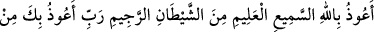
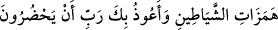
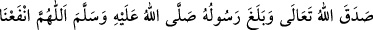

gaybı bildikleri ve zarar ve fayda verdikleri şeklinde vesvese verir. İnsanlar cihetinden
de kâhinler ve müneccimler gibi kimselerin aynı şeyi yaptığı vesvesesini verir.
“Cinne” ifâdesinde gizli örtülü kuvvetlere işâret vardır. Çünkü cinler gizli oldukları
için bu ismi almışlardır. “Nâs” ifâdesinde ise zâhir kuvvetlere işâret vardır. Çünkü
“Nâs” kelimesi zuhûr etmek, ortaya çıkmak mânâsındaki “înas” kelimesinden
gelmektedir. Nitekim âyet-i kerimede “Bir ateş gördüm” [Tâhâ, 20/20] buyrulmaktadır.
Bu makamda güzel bir latife vardır. Buna göre birinci sûrede kendisine sığınılan zât,
bir sıfatla mezkûrdur. O da felakın Rabbi sıfatıdır. Kendisinden sığınılan şey ise üç tür
âfettir. Onlar da gâsik/gece, neffâsât/sihirbazlar ve hâsid/hasetçi’dir. Bu sûrede
kendisine sığınılan zât, üç sıfatla mezkûrdur. Onlar da Rab, Melik ve İlâh’tır.
Kendisinden sığınılan şey ise bir âfettir. O da vesvesedir. Mâlumdur ki, matlup ne kadar
mühim ve ona rağbet ne kadar fazla olursa tâlibin onu talep etmeden önceki senâsı daha
fazla olur. Önceki sûrede matlup bedenin söz konusu âfetlerden selâmetiydi. Bu sûrede
ise dînin şeytanın vesvesesinden selâmetidir. O hâlde bu iki sûrede şu husûsa dikkat
çekilmiş oluyor: Dînin şeytanın vesvesesinden selâmeti her ne kadar tek bir iş olsa da,
en büyük murâd ve en mühim matluptur. Bedenin söz konusu âfetlerden selâmetine
gelince, âfetler her ne kadar çok olsa da önceki kadar mühim değildir.
Âkâmu’l-mercân’da şöyle denir: Nâs sûresi, bütün günah ve mâsiyetlerin sebebi olan
şerden istiâze/Allah’a sığınmadır. O da insanın içinde bulunan; dünya ve âhiretteki
bütün cezâların sebebi olan şerdir. Felak sûresi kulun nefsine zulüm sebebi olan şerden
istiâzedir ki, bu dışarıdan gelen bir şerdir. İlk şer mükellefiyete konu olmaz ve
terkedilmesi istenilmez. Çünkü insanın kesbinden değildir. İkinci şer ise mükellefiyete
konu olur ve kendisine nehiy taalluk eder yasaklanır.
Hz. Âişe (r.anhâ)’dan rivâyet edildiğine göre o şöyle demiştir: “Rasûlullah (s.a.) her
gece yatağına girdiğinde iki avucunu birleştirir, Felak ve Nâs sûrelerini okuyarak onlara
üflerdi. Sonra bunlarla vücudundan yetişebildiği yerleri sıvazlardı. Elleriyle
sıvazlamaya başı ve yüzü üzerinden başlar, vücûdunun ön kısmını da sıvazlardı. Bunu
üç defa tekrar ederdi.”[284]
Ebû Tâlib Mekkî (k.s)’un Kûtu’l-kulûb kitabında şöyle geçer: Kul, şu duâyı dersinin
anahtarı yapsın:
“Koğulmuş şeytanın şerrinden Semî ve Alîm olan Allah’a sığınırım. Rabbim
şeytanların vesveselerinden sana sığınırım. Rabbim onların yanımda bulunup beni
saptırmalarından sana sığınırım” yapsın. Sonra Nâs sûresini, akabinde de Hamd
(Fâtiha) sûresini okusun. Her sûreyi bitirdiğinde de şunu desin: